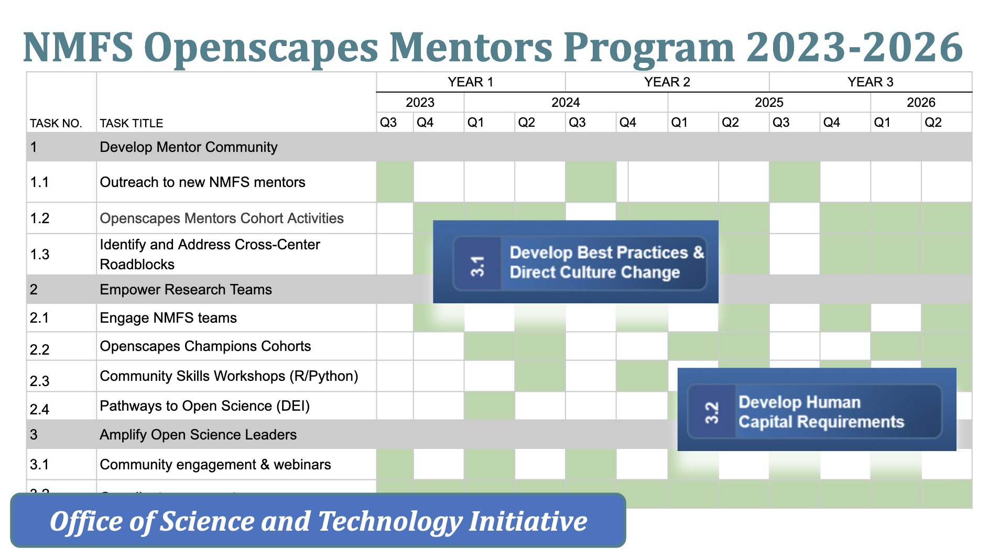

NMFS Openscapes
Implementing the NOAA Fisheries Data Strategy for reproducible and open science

NMFS Openscapes is a multi-year colloboration between NOAA Fisheries science centers and Openscapes to provide team-based training in reproducible scientific workflows and platforms. We have had 10 Openscapes cohorts in 2020-2022 (400 staff! [40 staff per cohort]), involving all six science centers plus two regional offices.
NMFS Openscapes 3-year Framework and FY24 plan
As part of NOAA Fisheries Data Vision: Open Data and Open Science, over three years, we plan to work with all six NMFS science centers, five regional offices, and the Office of Science and Technology. We plan to start with six centers/offices in Year 1, and add three more each year. We have three synergistic Objectives:
- Develop a mentor community. We will develop a community of mentors across NMFS centers/offices. With Openscapes facilitation these mentors will learn and work together to strengthen Open Science skills at their center/office, co-create reusable resources for NMFS-specific scientific products, and empower their colleagues via local activities and trainings.
- Empower scientific teams. We will support center/office researchers to become high-functioning teams as they transition to Open Science and reproducible scientific workflows through the Openscapes’ Champions and Pathways to Open Science programs and other Community Skill Building Workshops. Cohorts can include teams from the same or across centers/offices, or be topic specific (like stock assessment reports) to strengthen relationships and shared practices.
- Amplify Open Science leaders. We will amplify NMFS Open Science leaders and leverage synergistic efforts within NMFS and NOAA. We will focus on opportunities and recognition for staff who support their colleagues, which is critical to upskilling the NMFS workforce, deepening leadership capacity within NOAA, and connecting to the global Open Science movement.
Please see the Mentors Community Page for more details about our Fall schedule.
October-December 2023: Openscapes Mentors FY24 Program Kick-off! See mentor page for details.
January-March 2024: Openscapes Champions cohorts. We are planning three simultaneous cohorts at science centers and regional offices much like in fall 2022.

NMFS Openscapes FY23
July-September 2023: Kick-off, engagement, planning, and coordinating for FY24. Bi-weekly meetings with the FY23 NMFS mentors to plan the year and identify strategic priorities and engagement.
January-June 2023 Bi-weekly mentor coach training with Tara Robertson, a DEI consultant and leadership coach who has worked with Openscapes since 2021. We are learning - how to ask open-ended questions, how to listen - that make us better equipped as mentors, teachers, and leaders. Blog post: How coaching skills have made us better open data science mentors.
October-December 2022 Four Champions cohorts (150+ staff)! See the Champions Cohort page.